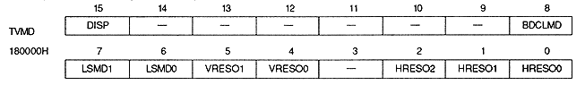
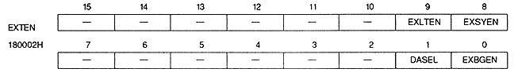
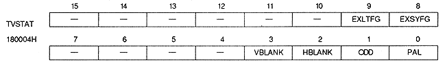
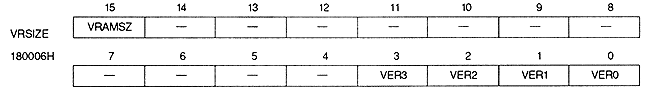
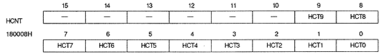
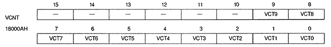
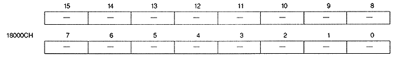
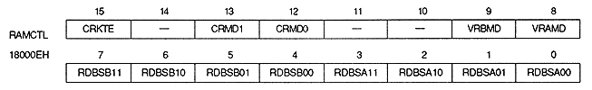

Return to previous page ｜ Return to menu ｜ Go to next page
● TV screen mode (Readable)

External signal enable (ready)

Screen status (read only)

VRAM size (Readable)

● H counter (read only)

V counter (read only)

Reserve

RAM control (Readable)

Return to previous page ｜ Return to menu ｜ Go to next page